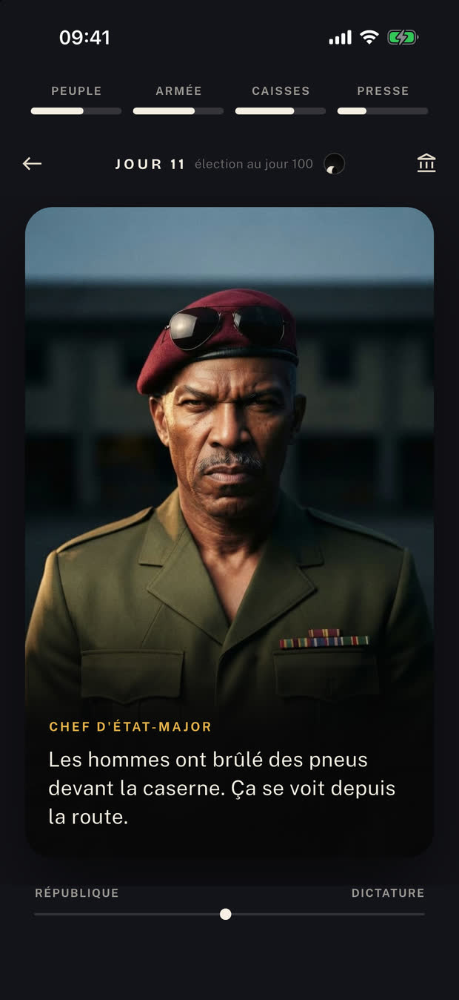
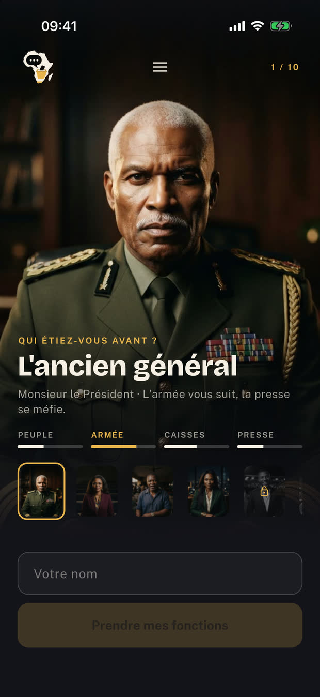
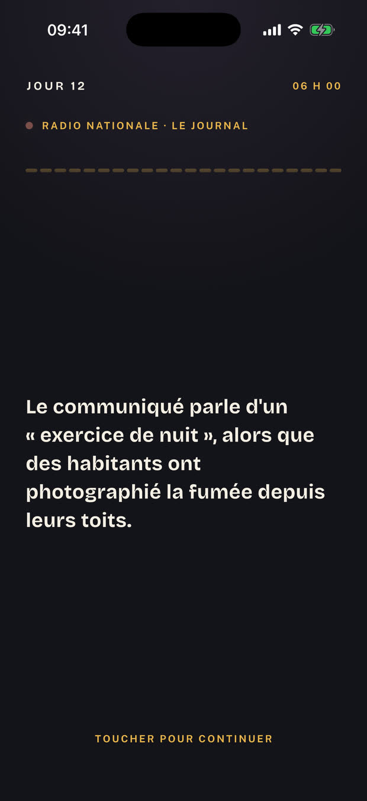
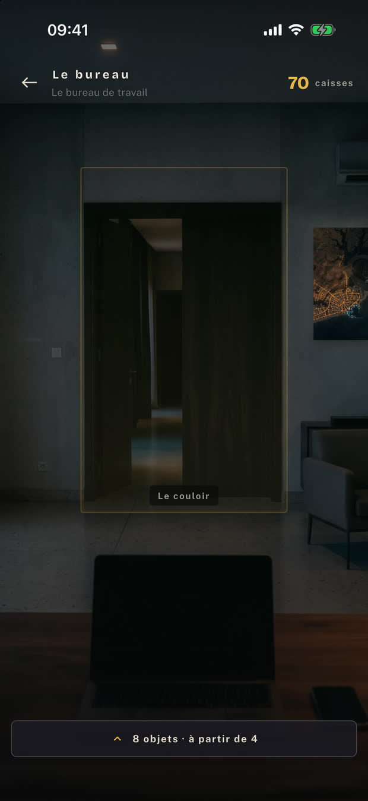
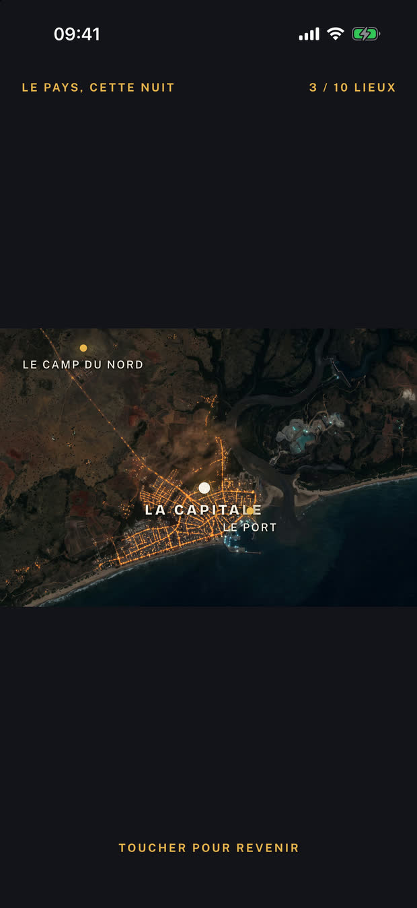
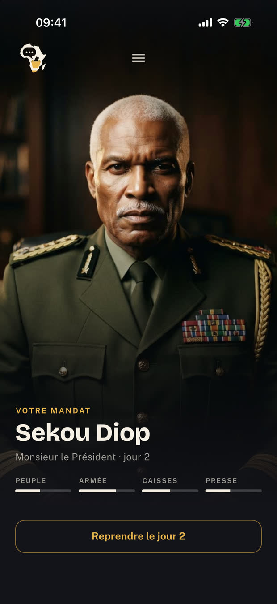

Vous venez d'être élu président d'un pays qui n'existe pas. Chaque jour, quelqu'un entre dans votre bureau et vous laisse deux réponses. Puis le jour suivant arrive.

Peuple
Armée
Caisses
Presse
Quatre jauges vous tiennent. Elles vous tuent à zéro comme à cent : une armée négligée vous renverse, une armée trop contente gouverne à votre place. Contenter l'une vide l'autre, et c'est tout le métier.
Une photo étouffée au douzième jour ressort au quarantième. Un colonel que vous avez muté revient avec des galons. Cinquante-neuf histoires s'étalent sur plusieurs cartes et se souviennent de vous — et les quinze personnes qui entrent dans votre bureau retiennent, chacune, ce que vous avez fait de ce qu'elles défendent.
Entre deux cartes, vous le meublez avec l'argent de l'État. Un ventilateur, un fauteuil de cuir, une limousine, un coffre-fort. Ce qui est acheté reste, même après une chute.
L'ancien général, la professeure, le syndicaliste, la femme d'affaires, la militante. Chacun arrive avec ses appuis, ses ennemis et ses propres cartes.
Les blindés à l'aube, les caisses vides, la rue, l'urne. On ne gagne pas un mandat : on arrive au centième jour, ou on n'y arrive pas.
Rien de réel n'est nommé dans ce jeu. Ni pays, ni ville, ni monnaie, ni institution, ni parti, ni religion. Le décor est inventé de bout en bout, jusqu'à la carte satellite accrochée au mur du bureau — et les visages qui vous parlent n'appartiennent à personne.





Le jeu est écrit et jouable, mais il n'est publié sur aucune boutique à ce jour. Si vous voulez qu'on vous prévienne le jour où il arrive sur l'App Store et sur Google Play, écrivez-moi — un mot suffit, et votre adresse ne servira qu'à ça.
Me prévenir à la sortie